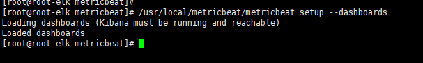
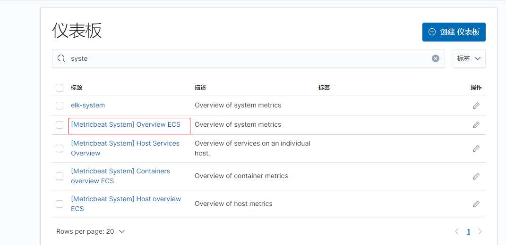
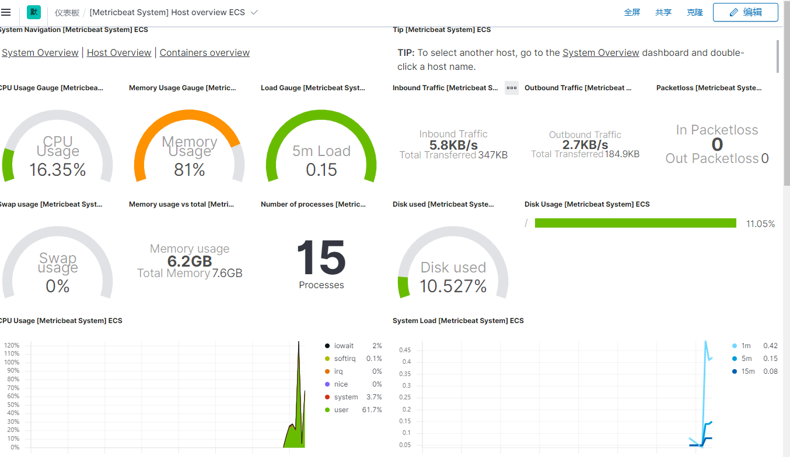
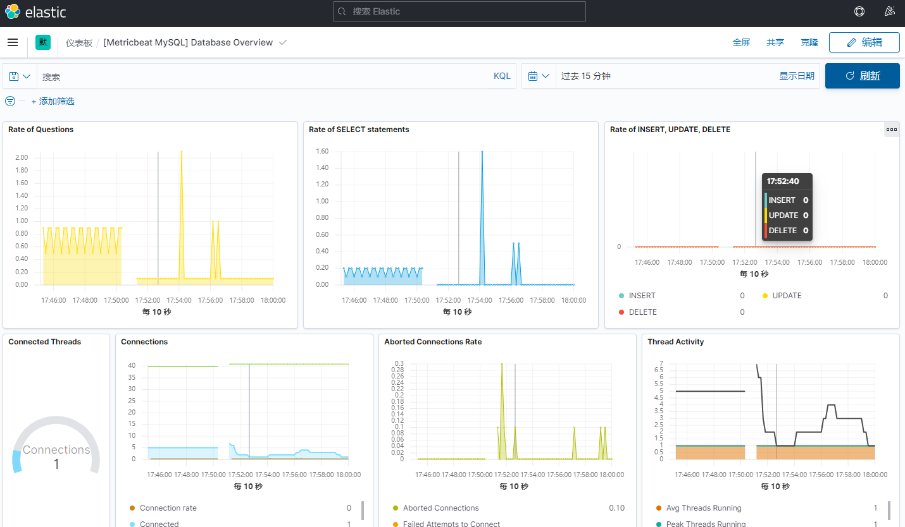

一、Metricbeat
- Metricbeat是轻量型指标采集器
1、下载Metericbeat
- 下载地址：https://www.elastic.co/cn/downloads/beats/metricbeat
- 下载成功后，解压即可
wget https://artifacts.elastic.co/downloads/beats/metricbeat/metricbeat-7.12.0-linux-x86_64.tar.gz
tar -zxvf metricbeat-7.12.0-linux-x86_64.tar.gz -C /usr/local/
cd /usr/local/
mv metricbeat-7.12.0-linux-x86_64 metricbeat
2、启动Metericbeat
- 可以编辑：
/usr/local/metricbeat.yml配置文件# 启动: -e 控制台打印日志，-c 后面跟配置文件
/usr/local/metricbeat -e -c metricbeat.yml
3、收集系统指标
- MetricBeat使用模块来收集指标。
- Metricbeat默认只开启了 system模块。
- 每个模块都定义了用于从特定服务中收集数据的基本逻辑，例如Redis或MySQL。
# 查看metricbeat支持的模块列表，默认`enabled`中只有`system`，其他都是disabled不启用. |
- 手机系统指标到ES中，然后到kibana查看可视化界面
- 在
metricbeat.yml配置ES
output.elasticsearch: |
- 启动Metericbeat:
/usr/local/metricbeat -e -c metricbeat.yml
4、安装仪表盘到kibana
修改配置 metricbeat.yml
setup.kibana:
host: "192.168.31.169:5601"然后执行命令：
/usr/local/metricbeat/metricbeat setup --dashboards，执行这个命令需要kibana是启动的状态

- 如上就是成功，之后kibana就会加载有很多Metricbeat的仪表版
- 选择添加：
[Metricbeat System] Host overview ECS可视化仪表盘


5、收集指标并自定义索引
- 收集MySQL指标，并自定义索引
- 配置每个模块对应一个索引
- 启动MySQL 模块收集：
./metricbeat modules enable mysql - 编辑MySQL模块的配置:
vim /usr/local/metricbeat/modules.d/mysql.yml - 配置mysql配置内容如下：
# Module: mysql |
- 修改 metricbeat 的默认配置文件:
metricbeat.yml(当然也可以新建，然后以-c参数形式启动)
# =========================== Modules configuration ============================ |
- 启动即可。
